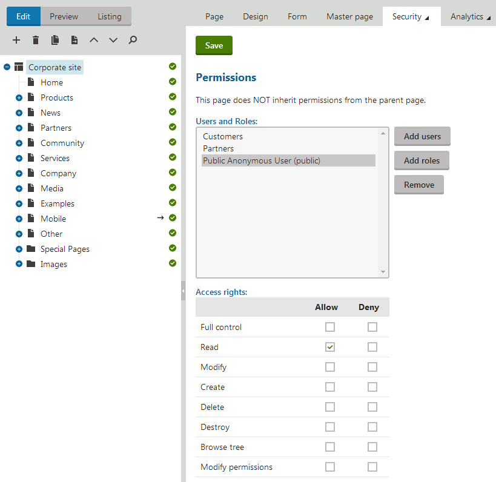
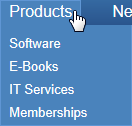
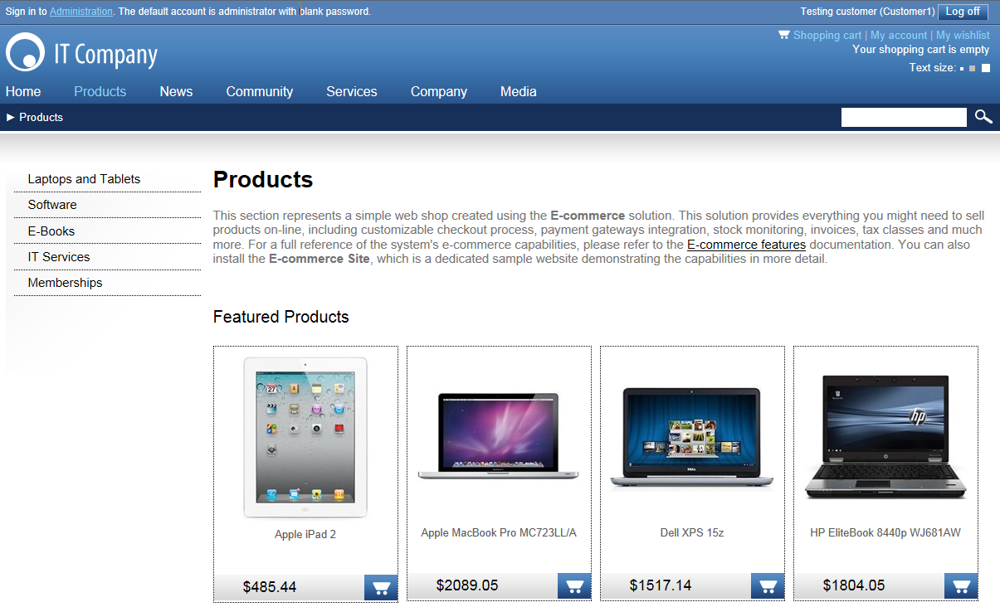
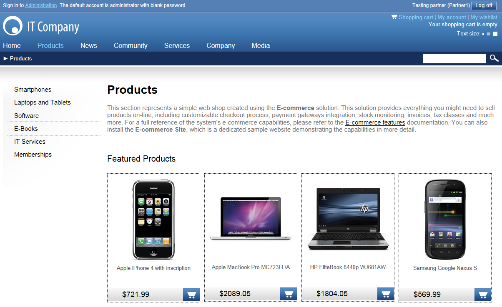

Hiding pages based on permissions
Kentico allows you to restrict access to certain content based on the current user. This approach uses Page-level permissions (ACLs). These restrictions apply on pages in the Pages application, pages listed by web parts, and various dialogs where the content tree is displayed.
Content personalization in Kentico EMS
This approach checks the current user's permissions for the page that is being displayed. If you want to personalize your site to achieve more advanced scenarios according to completely custom conditions, use Content personalization.
Content restrictions summary
Configure Check page permissions in Settings -> Security & Membership. This makes sure the system performs security checks on the desired section of the content. See Settings - Security & Membership.
Enable Check page permissions in Settings -> Content -> Content management, if you want the check to be performed on pages in the content tree of the Pages application as well.
To modify access to pages, go to a page's Properties -> Security tab and assign permissions.
For listings, grant or deny the Read permission to users and turn on the Check permissions attribute in the appropriate web parts.
When the user is not authenticated, the system uses a special user Public anonymous User (public).
You can also configure web parts to consider these permissions and list pages based on these permissions.
If a user has the Read permission for a child page but not for its parent, the child page is not displayed either. In case that a user doesn't have the Read permissions for any page at all, a message is displayed in the place of the content tree, informing the user about insufficient permissions to see the root page.
Example: Restricting the Products menu
In this example, you will learn how to display the Products section only to members of the Customers and Partners roles. They, you will see how to display the Smartphones category only to members of the Partners role.
Note that this example uses the sample Corporate site for illustration.
Creating sample objects
First, create the objects you will work with in this example:
Open the Roles application.
Select the Corporate Site from the Sites drop‑down list and create new roles Customers and Partners.
Open the Users application and and create a new user Customer1 with the following values:
User name: Customer1
Full name: Testing Customer
Enabled: yes (checked)
Privilege level: None
Assign the user to the Corporate Site and to the Customers role.
Create another user Partner1 with the following values:
User name: Partner1
Full name: Testing Partner
Enabled: yes (checked)
Privilege level: None
Assign the user to the Corporate Site and to the Partners role.
Assigning page-level permissions
Assign page-level permissions to the created roles:
Navigate to Settings -> Security & Membership and set Check page permissions to All pages.
This ensures that the security settings assigned in the following steps will be checked for all pages on the website.
Open the Pages application and select the root of the content tree.
Switch to the Properties -> Security tab.
Add the Public anonymous user (public) user and Customers and Partners roles to the list.
Grant the Read permissions to the user and roles.
Please note that you must click Save after assigning permissions to each user or role.

Assigning page permissions to selected users and roles
Hiding selected child pages
Now hide the product categories from public users:
In the content tree, navigate to /Products/Smartphones and switch to the Properties -> Security tab.
The permissions that you configured for the root of the content tree are inherited by this page.
Click the Change permission inheritance link to break the inheritance.
In the following dialog, choose Break inheritance and copy parent permissions.
Select the Public Anonymous User (public) and deny the Read permission.
Repeat the previous steps for the Laptops and Tablets page.
Also deny the Smartphones page for the Customers role.
Configuring web parts to check permissions
The permissions are not checked by web parts by default, so we need to configure the web parts so that they check the Read permission of the current user.
Choose the root in the content tree and switch to the Design tab.
Configure the Top list menu (CSS list menu) web part and select its Check permissions check-box in the System settings. Click OK.
Repeat the same for the CSS list menu and Featured products web parts on the /Products page.
Verifying the result
Sign out. If you mouse-over the Products menu item as a public user, you will see that the sub-categories representing the restricted sections are no longer displayed.

Restricted pages are no longer displayed in menusSign in as user Customer1 (using the mini‑form at the top right of the page).
Navigate to Products via the main menu. As you can see, the Smartphones section and Smartphone products are not displayed to this user.

Restricted section and products are not displayed to the userNow sign out and sign in again as user Partner1. You will see all categories and products.

All sections and products are displayed to this user
You have learned how restrict access to content based on user permissions.